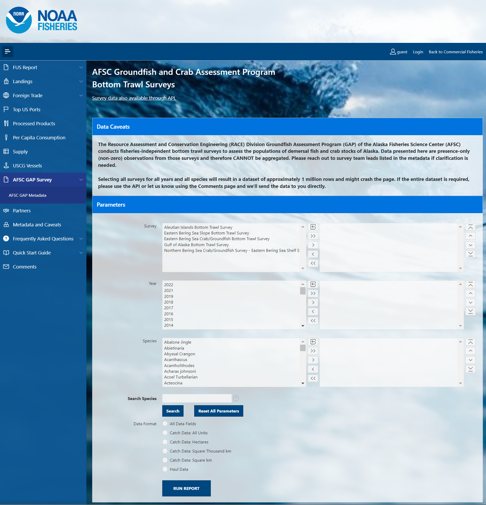
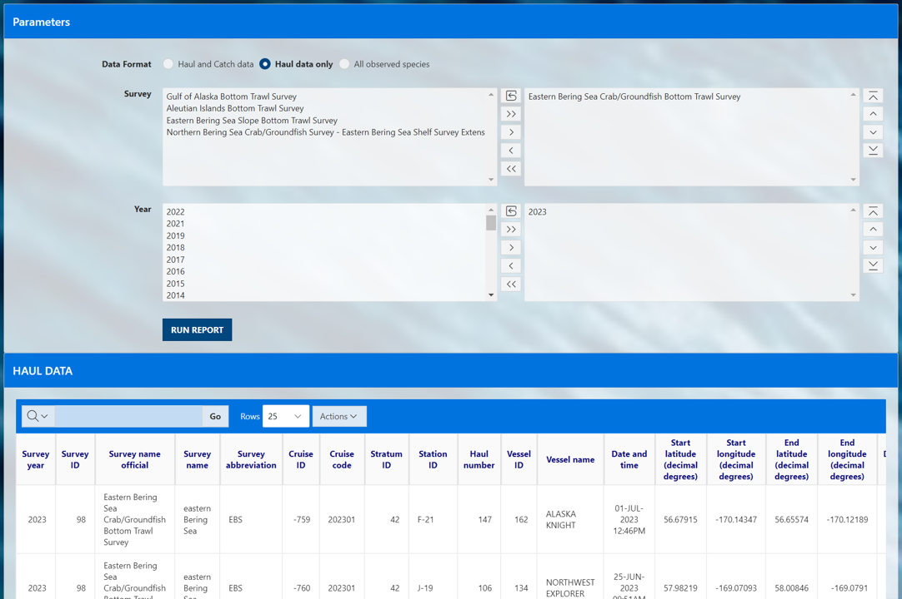
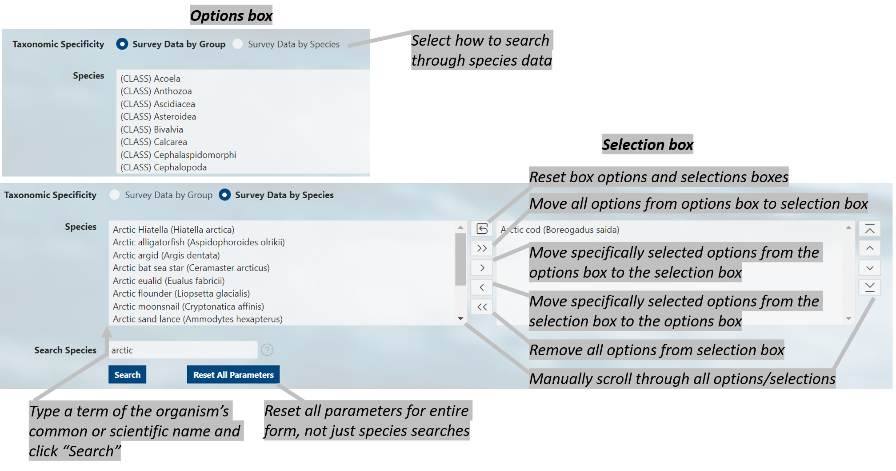

Using the FOSS platform
Select and filter
Select, filter, and download this and other NOAA Fisheries data from the Fisheries One Stop Shop (FOSS) platform. A user guide for the FOSS platform can be found here. To begin a report, select the kind of data you need: Haul and catch data, Haul data only, All observed species.
In this example, we’ll select for 2023 eastern Bering Sea Arctic cod data. Here, we used the
Search Speciesbox to search for species with the term “cod” in their common names and selected “Pacific cod” from that shortened list.
Catch and haul

Haul

Species

Search options
The user must select a option in each of the three option boxes as they appear for catch, haul, and species:
Survey: Each survey has different in design, time series, and history. More information on each survey and their designs can be found in our annual data reports.Year: Surveys are not conducted in all years, so only data from the years for which the survey was conducted will be returned.Species: Common name of all species ever encountered in the survey. Find more information about these species in our survey code books.
For a given box, select one or a few options from the options box (list on the left) to query. To select multiple options, hold down the CTRL key while clicking on the options of interest, or click and drag down the list. Once the options you wish to be included in your query are highlighted, click the right-pointing arrow (>) to move them into the “selection box” (list on the right). This can also be achieved by double clicking the option item of interest. If you accidentally select an option that you do not want to query, simply select the unwanted option from the selection box and click the left-pointing arrow (<).
If you wish to select all options from the options box and send them to the selection box, simply click the double right-pointing arrow (>>). If you want to unselect all options from the selection box, use the double left-pointing arrow (<<) or the reset icon.
To find a specific species or group more quickly you can use the Search Species option to quickly narrow the options. Search for parts of species common names in the Search Species box by entering a term and clicking the search button. The platform will return a shorter list in the Speices options box of only species that contain a match to that search term.
Use the Reset All Parameters button to reset all parameters for entire form.

Run report
Click the RUN REPORT button. Below the select and filter area, the results of your query will appear below the page in the format you selected. To change the format, make a different selection and run the report again. Further modifications to your results can be made by clicking on the Actions button above your data. Here you can download your data, select columns included in your results, and apply a variety of filters and mathematical tools.

API
APIs, or Application Programming Interfaces, allows users to pull data through a IDE, or integrated development environment, like RStudio or VS Code. Explore the API pages for each of the data pages (Haul and catch data, Haul data only, All observed species).
Use data
Learn how to pull and use this data through the
- API and R programming language
- API and python programming language using the
afscgappython package - Oracle and R programming language (AFSC scientists only)